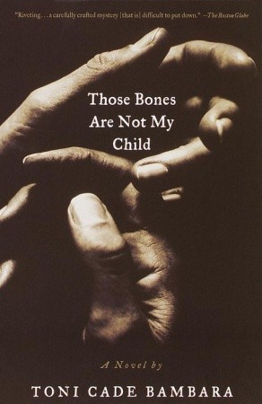

5: Eileen

Ratings : 🌟 3.5/5
Author : Ottessa Moshfegh
Genre :FictionMysteryThriller
Year Published : 2015
Pages : 272
Brief:
The Christmas season offers little cheer for Eileen Dunlop, an unassuming yet disturbed young woman trapped between her role as her alcoholic father’s caretaker in a home whose squalor is the talk of the neighborhood and a day job as a
secretary at the boys prison, filled with its own quotidian horrors.
Consumed by resentment and self-loathing, Eileen tempers her dreary days with perverse fantasies and dreams of escaping to the big city. In the meantime, she fills her nights and weekends with shoplifting, stalking a buff prison guard
named Randy, and cleaning up her increasingly deranged father’s messes. When the bright, beautiful, and cheery Rebecca Saint John arrives on the scene as the new counselor at the prison, Eileen is enchanted and proves unable to resist
what appears at first to be a miraculously budding friendship. But her affection for Rebecca ultimately pulls her into complicity in a crime that surpasses her wildest imaginings.
4: The Girl on the Train

Ratings : 🌟 4.0/5
Author : Paula Hawkins
Genre :FictionMysteryThrillerCrime
Year Published : 2015
Pages : 325
Brief:
Rachel catches the same commuter train every morning. She knows it will wait at the same signal each time, overlooking a row of back gardens. She’s even started to feel like she knows the people who live in one of the houses. “Jess and Jason,” she calls them. Their life—as she sees it—is perfect. If only Rachel could be that happy. And then she sees something shocking. It’s only a minute until the train moves on, but it’s enough. Now everything’s changed. Now Rachel has a chance to become a part of the lives she’s only watched from afar. Now they’ll see; she’s much more than just the girl on the train...
3: One Flew Over the Cuckoo's Nest

Ratings : 🌟 4.2/5
Author : Ken Kesey
Genre :Fiction:Literature:Psychology:Thriller
Year Published : 1962
Pages : 320
Brief:
The book is narrated by "Chief" Bromden, a gigantic yet docile half-Native American patient at a psychiatric hospital, who presents himself as deaf and mute. Bromden’s tale focuses mainly on the antics of the rebellious Randle Patrick
McMurphy, who faked insanity to serve his sentence for battery and gambling in the hospital rather than at a prison work farm. The head administrative nurse, Nurse Ratched, rules the ward with absolute authority and little medical
oversight. She is assisted by her three day-shift orderlies and her assistant doctors and nurses.
McMurphy constantly antagonizes Nurse Ratched and upsets the routines of the ward, leading to endless power struggles between the inmate and the nurse. He runs a card table, captains the ward's basketball team, comments on Nurse Ratched's
figure, incites the other patients to conduct a vote about watching the World Series on television, and organizes a deep-sea fishing trip wherein the patients were going to be "supervised" by prostitutes. After claiming to be able, and
subsequently failing, to lift a heavy control panel in the defunct hydrotherapy room (referred to as the "tub room"), his response—"But at least I tried"—gives the men incentive to try to stand up for themselves, instead of allowing Nurse
Ratched to take control of every aspect of their lives. The Chief opens up to McMurphy, revealing late one night that he can speak and hear. A violent disturbance after the fishing trip results in McMurphy and the Chief being sent for
electroshock therapy sessions, but such punishment does nothing to curb McMurphy's rambunctious behavior.
2: The Shining

Ratings : 🌟 4.2/5
Author : Stephen King
Genre :HorrorFictionMysteryThriller
Year Published : 1997
Pages : 659
Brief:
Jack Torrance's new job at the Overlook Hotel is the perfect chance for a fresh start. As the off-season caretaker at the atmospheric old hotel, he'll have plenty of time to spend reconnecting with his family and working on his writing. But as the harsh winter weather sets in, the idyllic location feels ever more remote...and more sinister. And the only one to notice the strange and terrible forces gathering around the Overlook is Danny Torrance, a uniquely gifted five-year-old.
1: Not my Child
Ratings : 🌟 4.7/5
Author : Lady Lissa
Genre :MysteryThrillerSorcery
Year Published : 2019
Pages : 202
Brief:
The most important job a parent has is to keep their children safe. So, what happens when these parents fail to monitor their children's online activities? This THRILLING, NAIL BITING, HEART POUNDING series will have you sitting at the
edge of your seat.
Sex trafficking has become a major issue around the world over the past few years. Every day a child is at risk of being the next victim just from sitting at their computer. These predators prey on children between the ages of 12 and
16, so if you think your child can’t be a victim, think again. Please monitor your child’s computer, know who they’re talking to and who their friends are before it’s too late.
When Sereniti received a computer for her birthday she was elated and couldn’t wait to use it. Soon after, she starts chatting with a young boy. Unbeknownst to her parents, the two continue to communicate until Sereniti is head over
heels and will do anything Tyriq says. When she runs away from home to be with Tyriq, she thinks he’s going to be whisk her off her feet and live happily ever after like the fairytales. Little does she know… Tyriq has a side to him that
she’s never seen before.
Meet Tyriq Evans a smart and charming man who spends his days and nights searching the internet for unsuspecting girls. When he happens across young and naïve Sereniti it doesn’t take long for him to convince her that he loves
her. He didn’t realize it would take so long to get her to meet with him, but when she does finally get her to come out for a night, she has no idea that she won’t be returning home. Tyriq has other plans for Sereniti and she soon finds
out that she’s bitten off more than she can chew.
Will Tyriq sell her to the highest bidder or will her parents find her before it’s too late?